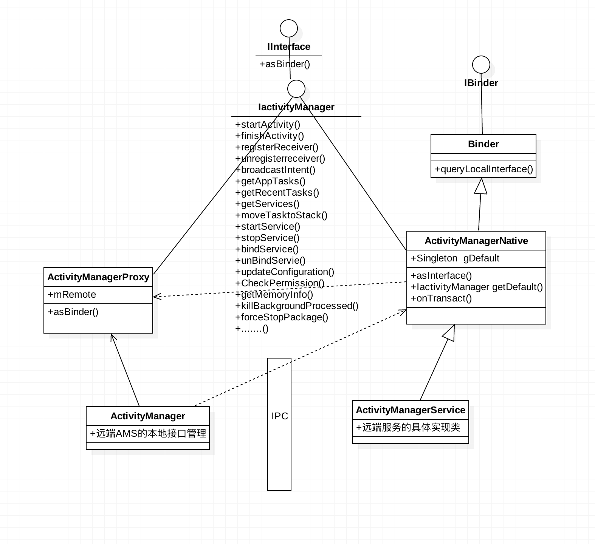

知识总结之 插件化学习 Hook系统方法分析
这里主要讲的Hook，是利用java上的动态代理实现替换系统某个类，在方法调用过程中，利用反射，插入自己代码逻辑的一种方式。

安卓插件化学习 Hook系统服务分析
Hook技术主要用的是java的动态代理，掌握类动态代理，其实不难理解Hook原理，只不过是找到一个我们需要的Hook点，然后动态代理获取到系统目标类的代理对象，然后就可以在InvocationHandler中对想要修改的方法逻辑插入自己需求逻辑。
一、Hook的必要条件
根据上一篇中Java反射与代理机制 讲的动态代理机制，重要的是两点：
1、Hook对象需要实现一个接口，并且这个接口方法中有我们需要注入代码的目标方法。
满足这两点，就可以利用newProxyInstance方法构造出目标对象的代理类，并且在代理对象反射调用的时候，可以调用到Handler里面的对应方法invoke方法里面。
2、满足1条件的同时，获取目标Hook对象。
这点为整个Hook过程中的难点，要想对某个对象的方法Hook，就要得到该类的对象，然后对于系统的类调用，很多情况是不容易获取对象引用的。然后我们可以找一些静态变量(不用获取类实例)或者一些单例类（反正是单例子，肯定就一个），
来降低hook的难度及寻求技巧。
二、系统服务层架构简单分析
想要hook系统服务，就要熟悉系统服务的基本架构，主要是了解应用与系统交互的Binder架构方式，最好要先了解Binder的相关知识。
结合上节讲的Binder，总的来说可以理解系统服务的使用主要理解下面这几点：
- 1.调用getSystemService(serviceName)方法可获取服务对象在本地进程的一个业务逻辑管理类。
- 2.方法内用到远端对象的，其实是调用了ServiceManager的getService方法，获取Ixxx类或xxxManager（以下用Ixxx代替）的远端Binder实体的一个本地BinderProxy。
- 3.调用ServiceManager的getService方法获取远端服务的IBinder对象，这个过程需要底层Binder驱动完成IPC通信。
- 4.有了远端服务的IBinder对象之后，通过Stub类的asInterface方法进行类型转化，获取目标接口对象。
- 5.系统中的服务获取都是肯定是跨进程的，远端服务都是在system_server进程中的，所以asInterface方法中返回的是Proxy代理对象，也就是本地端的中间者。
- 6.最后返回的对象其实就是这个Proxy对象，而这个对象内部使用了静态代理方式，内部有一个来自远端的mRemote变量即IBinder对象。然后直接调用方法其实就是调用mRemote的transact方法进行通信了。
三、Android系统中常用Hook点
安卓系统中有很多我们可以直接动态代理的地方，要想了解和发现这些可hook的点，需要我们熟练的通读和理解源码知识、比如应用的启动过程、四大组件的启动过程、Handler源码分析、View绘制流程等一系列基本知识体系。
通用的hook方案来接管系统各类ManagerService
我们想要获取系统的一个服务都会用到这么一段代码如下：
|
|
然后分析getSystemService方法的具体实现，可以发现此类Manager自身系统服务相关方法在应用本地提供的一个代理类，真正的实现方法会同行getService()方法IPC到系统进程。
那么我们分析下安卓源码的实现，SystemServiceRegistry提供了本地可类Manager的获取接口，任何找个Manager，分析，比如进入ActivityManager，发现每个方法进步都会调用
ActivityManagerNative.getDefault()方法获取远端proxy来IPC系统进程的实现。
其他Manager类似，最终都会通过下面方法，来获取远端对象的Proxy。
|
|
分析到这里，是不是就可以肯定只要我们Hook掉这个本地的代理，就可以骗掉系统远端实现，并在这个代理类中注入我们需求逻辑，那接下来看看这个本地代理的获取源码，符合动态代理要求吗？
|
|
该类中，主要看有个getService方法，和一个sCache 缓存。
sCache中保存的是远端服务的一个Ibinder对象，很明显他是实现Ibinder接口的， 并且这两个东西都是静态的，意味着我们可以反射调用getService，然后把sCache里的目标Ibinder替换为我们的动态代理对象。
Hook掉这个对象是不是就可以拦截系统方法了呢？ 答案是否定的。
应为这里hook掉的是一个IBinder接口，只是Binder驱动给我们的一个BinderProxy，BinderProxy是Binder内部final类型的类只是实现类IBinder接口，并没有我们需要拦截的方法。
那怎么才能够拦截我们的目标方法呢？ 当然是找到有这些方法的接口类，比如：IActivityManager、IServiceManager、IClipboard等…
那么这些接口类是怎么通过Binder驱动返回的BinderProxy对象来转化的呢？ 做过AIDL开发的，应该很熟悉下面代码
|
|
可以看出，只要obj.queryLocalInterface返回不为null，就会返回这个方法里的内容给外界调用的地方（即Ixx类的接口赋值）。
而queryLocalInterface方法又正好是IBinder接口中的方法，那么我们已经Hook掉的BinderProxy，再次hook掉BinderProxy的queryLocalInterface()方法，就可以完全替换系统层Ixx
类的远端服务的本地代理接口。
关键代码如下：
|
|
通过以上代码，就可以在HookBinderInvocationHandler类中，的invoke方法中连接Ixx接口的所有系统方法，并且注入自己的代码逻辑。
到这里大功告成，通过这种方法，基本上系统方法都可以hook掉。但是有没有别的办法呢？这种在办法至少需要有两个hook点，是否有必要呢？
其实hook是一项技巧活，Hook的次数需要实际情况的而定，要想通过动态代理实现hook，就需要从上面说的两点出发，获取可hook的对象及地点，找这两个点的难易程度决定了整个hook过程的次数及难易程度。
AMS服务的hook分析
在插件化实现过程中，Hook系统AMS是最基本也是最重要的学习内容, 接管AMS才能定制化相关插件逻辑，为应用层开发解耦。
Hook的技术需要灵活应用，比如AMS的Hook本来可以用上面的通用方法Hook掉，那具体问题具体分析，有没有更加简单的办法呢？ 有！
想要找到AMS精确的hook点，需要对应用的启动有一定了解，可以这篇文章分析AMS远端服务调用机制以及Activity的启动流程。
通用Hook方案中，由于第一次hook无法获取Ixx类的接口对象，所以多了一次hook。然后是不是只要我们一次性获取Ixx类的实例对象，就可以一次Hook完成接管系统服务。

看下应用启动过程源码及ActivityManager源码，会发现远端代理的获取并没有每次都采用getService，而是采用单例形式保存在一个静态变量里。
|
|
从上面代码可以看出，这里获取带远端的BinderProxy后，通过asInterface()方法转化成我们的hook目标接口类，并且返回后保存在一个静态变量里。
这样就为我们反射和动态代理这个点提供了方便。
1、使用反射获取这个gDefault里保存的IActivityManager；
2、动态代理产生一个代理类，替换掉这个IActivityManager；
代码如下：
四、总结
android平台动态代理方式hook系统，首选需要对hook的整理逻辑很熟悉，并且能给灵活找到hook地方，核心规则就是：能获取到要hook点的类对象，然后动态代理替换掉。
通过阅读源码发现，安卓平台架构中，很多地方都是类似的框架，所以我们可以用同样的办法取hook掉系统的其他服务。
——————
欢迎转载，请标明出处：常兴E站 www.canking.win